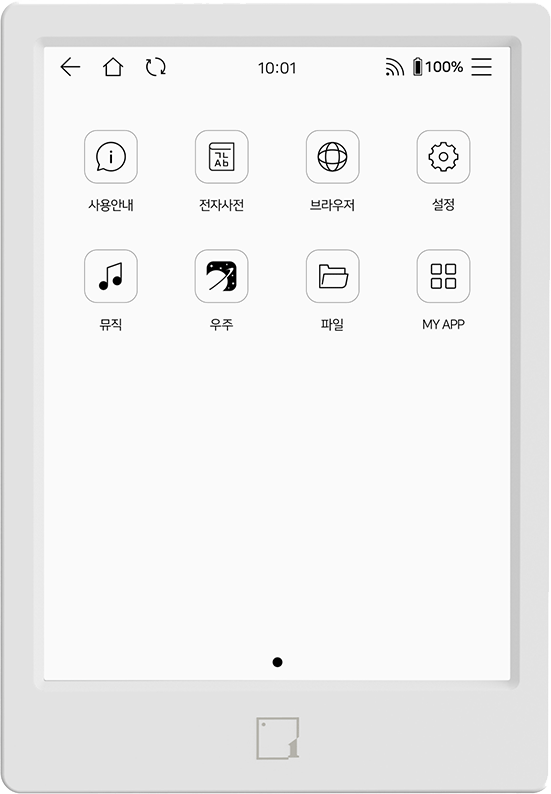

e-BOOK을 쓰는
이유는 단 하나,
모든 것.

자세히 알아보기
화살표
자세히 알아보기
화살표

e-Ink의 대표적 기술인 전기영동 디스플레이(ElectroPhoretic Display)는 화소가 직접 빛을 발생시키는 대신, 주변의 빛을 반사하여 내용을 표시합니다. 이는 주변 환경과의 밝기 차이를 최소화하여 눈의 피로를 줄이고 시력을 보호하는 데 도움을 줍니다.
또한, 빛을 발생시키기 위한 전력을 소모하지 않아 기기 사용 시간이 넉넉합니다.
e-Book은 오로지 독서에 집중할 수 있도록 설계된 기기입니다.
즉 필요한 기능만 갖춘 덕분에, 가격도 합리적입니다.
책을 수백, 수천권도 담을 수 있는 기기를 종이책 열 권 남짓한 가격에 구매한다면 그것은 분명 경제적인 선택입니다.
언제 어디서나 핸드폰을 볼 수 있듯이, 전자책 또한 언제 어디서나 볼 수 있습니다. 그러려면 휴대성이 좋아야겠죠. 대부분의 전자책은 비슷한 크기의 핸드폰에 비해 평균 20~30g 가볍습니다. 집에서도, 카페에서도, 대중교통에서도, 부담없이 주머니에서 꺼내 한 손으로 들고 읽을 수 있습니다.
슬라이드